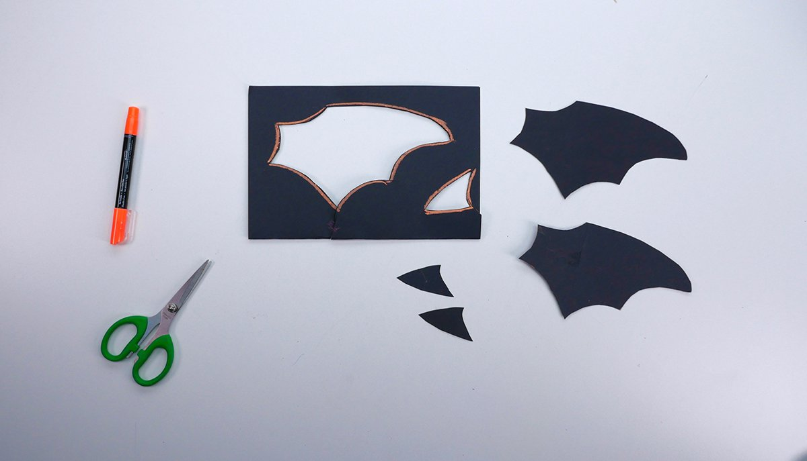
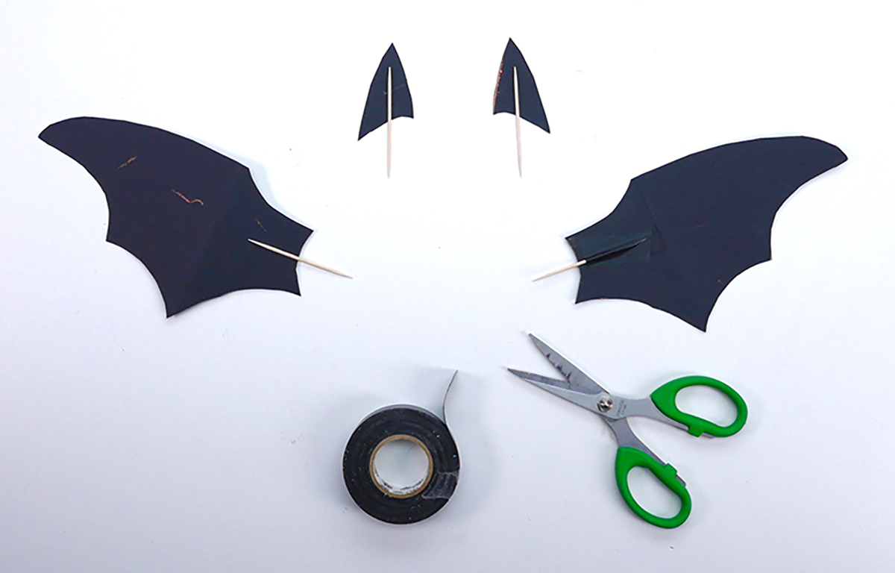
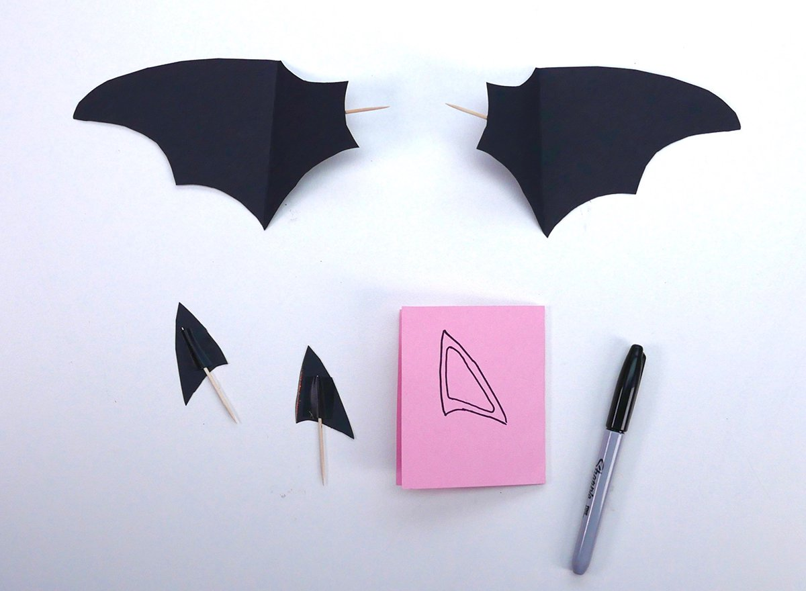

Twist the end of a screw into the foam ball this will help keep your hands clean during painting.
Paint black. Once finished rest on the inside of a bottle cap to help with drying and keep it
from rolling around and making a mess. Set aside and let dry.

Fold a black piece of construction paper in half. Draw a bat wing, be sure the body side of the wing
is shaped to the curve of the foam ball. Draw an ear shape. The inside of the ear should be
straighter than the outside to stand more upright. Draw a curve at the bottom to match the shape of
the foam ball. Cut out.

With black electrical tape. Tape a toothpick halfway on the back of both wings and both ears.

Facing forward, fold the wings along the top and bottom points of each wing. Trace one ear onto a
folded piece of pink paper. Draw a smaller size following the shape and cut. Fold a white piece
of paper cut a triangle shape with one side curved for the smile.